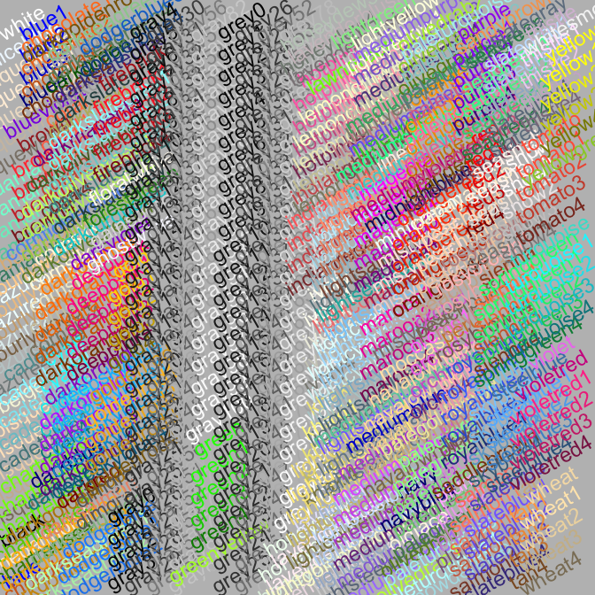
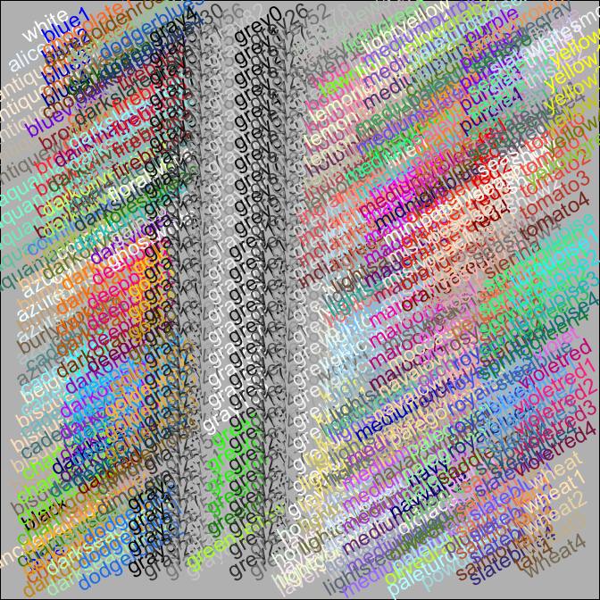
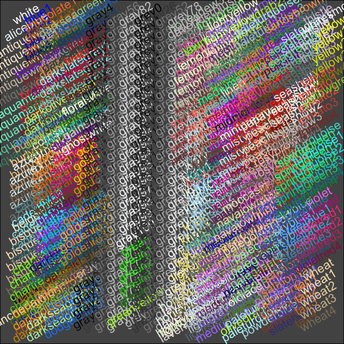
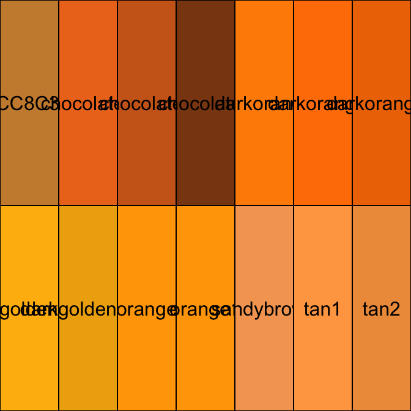
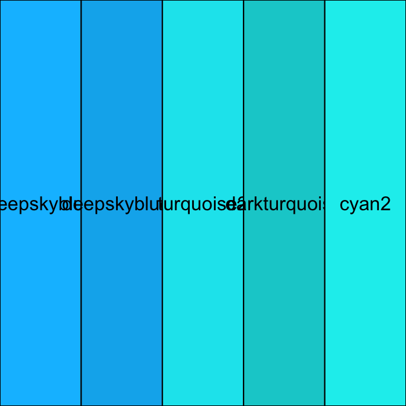
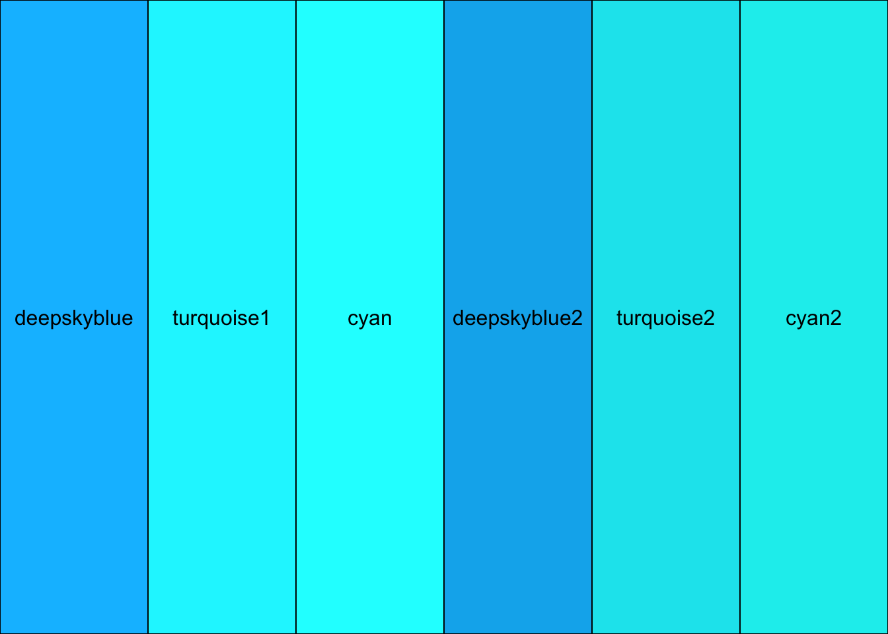
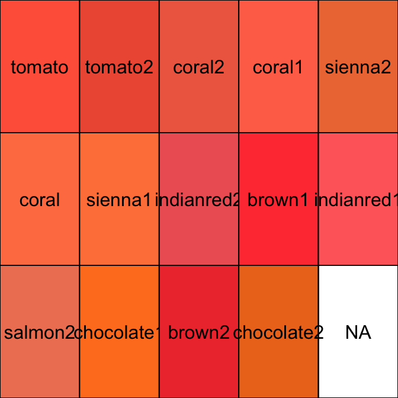
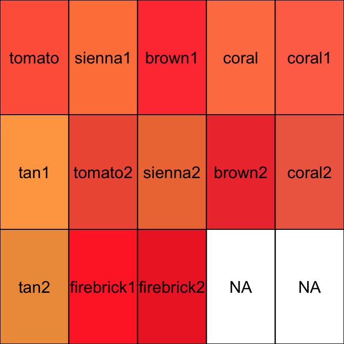
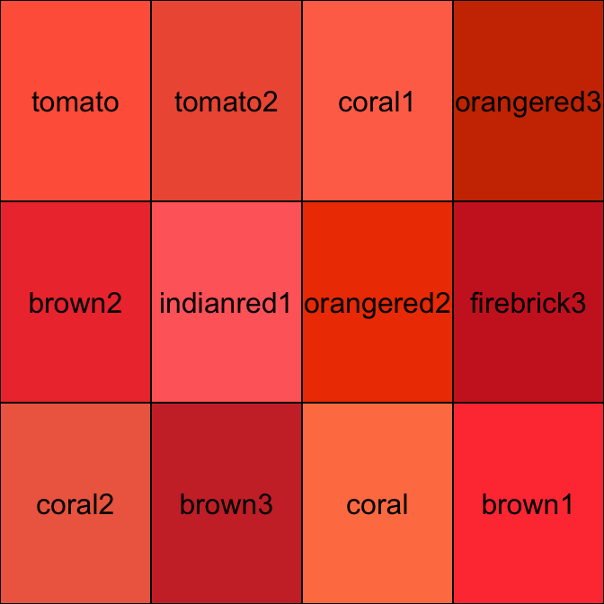
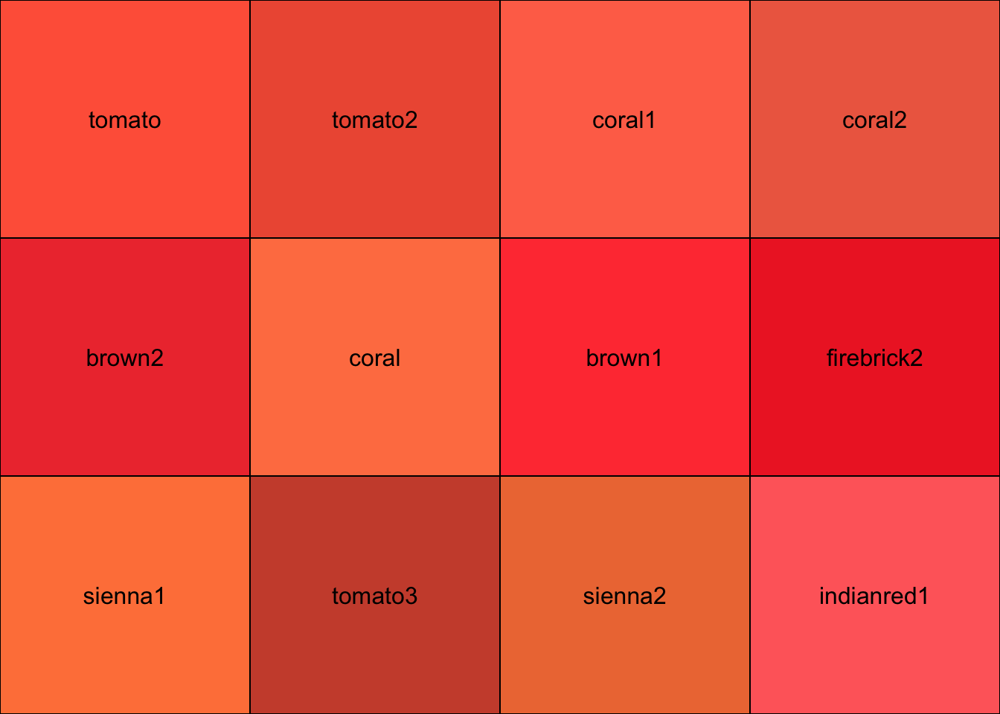

Chapter 7 Getting help
7.1 Introduction
R has a comprehensive built-in help system. This system is orientated around the base R functions and packages. Every good package comes with a set of help files. At a minimum these should provide information about the individual package functions and summaries of the data included with the package. They sometimes give descriptions of how different parts of the package should be used, and if we’re lucky, one or more “vignettes” that offer a practical demonstration of how to use a package. Other files are sometimes shipped with packages. For example, these might give an overview of the mathematical or computational theory a package relies on. We will not worry about these in this course.
We may as well get something out of the way early on. The word “help” in the phrase “help file” is a bit of a misnomer. It is probably more accurate to say R has an extensive documentation system. The reason we say this is that the majority help files are associated with functions, and these kinds of files are designed first and foremost to document how a particular function or group of functions are meant to be used. For example, they describe what kinds of arguments a function can take and what kind of objects it will return to us. Help files are also written in a very precise, painful-to-read manner. They contain a lot of jargon which can be hard to decipher unless you already know a lot about R or you have a computer science background.
The take-home message is that R help files are aimed more at experienced users than novices. Their primary purpose is to carefully document the different elements of a package, rather than explain how a particular function or the package as whole should be used to achieve a given end. That said, help files often contain useful examples, and many package authors do try to make our life easier by providing functional demonstrations of their package (those “vignettes” we mentioned above are a vehicle for doing this). It is very important to try to get to grips with the built in help system. It contains a great deal of useful information which you need to learn how to decipher in order to start using R effectively. The road to enlightenment is bumpy though.
7.2 Browsing the help system
How do we access the help system? Help files are a little like mini web pages, which means we can navigate among them using hyperlinks. This makes it very easy to explore the help system. One way to begin browsing the help system uses the help.start function:
help.start() If you type this now at the Console you will see the Package Index page open up in the Help tab of the bottom right pane in RStudio. This lists all the packages currently installed on your computer. We can view all the help files associated with a package by clicking on the appropriate link. For example, the functions that come with the base installation of R have a help file associated with them – click on the link to the R base package (base) to see these. Though you know about a few of these already, you will see a lot of functions listed here. R is huge.
The packages that come with the base R installation and those that we install separately from base R have their own set of associated help files. These can be viewed by following the appropriate link on the Package Index page. We will learn how to navigate these in a moment. Take note: it is up to the developer of a package to produce usable help files. Well-designed packages like dplyr and ggplot2 have an extensive help system that covers almost everything the package can do. This isn’t always the the case though, particularly with new or packages or packages that are not widely used. We will only ever use well-documented packages.
Notice that the help browser has Forward, Back, and Home buttons, just like a normal web browser. If you get lost in the mire of help pages you can always navigate backward until you get back to a familiar page. Annoyingly, the Home button does not take you to the same page as help.start. Click the home button now if you have not already done so. You will see three sections:
The Manuals section looks like it might be useful for novice users. Unfortunately, it is not. Even the “Introduction to R” manual is only helpful if you already have some programming experience, since it assumes you understand what terms like “data structure” and “data type” mean. It is worth reading this manual once you have gained a little more experience though. The others manuals. are more or less impenetrable unless you already know quite a bit about computing in general.
The Reference section is a little more helpful. The “Packages” link just takes you to the same page opened by
help.startso that you can browse help pages on a package-specific basis. The “Search Engine & Keywords” link takes you to a search engine page (no surprises there). You can use this to search for specific help pages, either by supplying a search term or by navigating through the different keywords. We will discuss the built-in search engine in the next subsection.The Miscellaneous Material section has a couple of potentially useful links. The “User Manuals” link lists any user manuals supplied by package authors. These tend to be aimed at more experienced users and the packages we will learn to use in this course do not provide them. However, it is worth knowing these exist as they are occasionally useful. The “Frequently Asked Questions” link is worth reviewing once you have gained a little experience of R, but again, most of the FAQs are a little difficult for novice users to fully understand.
7.3 Searching for help files
If you spend a short amount of time browsing help files via help.start it will quickly become obvious that this way of searching for help is not very efficient. Quite often we know the name of the function we need to use and all we want to do is open its associated help file. We do this using the help function:
help(topic = Trig)If you run this simple example you should see RStudio open up the help file for the trigonometry topic in the Help tab. This provides information about the various trigonometric functions such as sin or cos. We will learn how to make sense of help pages in the next subsection. For now we just need to understand how to use help.
The help function needs a minimum of one argument: the name of the topic or function of interest. When we use it like this the help function searches across packages, looking for a help file whose name gives an exact match to the name we supplied. In this case, we opened the help file associated with the Trig topic. Most of the time we use the help function to find the help page for a specific function, rather than a general topic. This is fine if you can remember the name of the topic associated with different functions. Most of us cannot. Luckily, the help function will also match help pages by the name of the function(s) they cover:
help(topic = sin)Here we searched for help on the sin function. This is part of the Trig topic so help(topic = sin) brings up the same page as the help(topic = Trig).
There are several arguments of help that we can set to alter its behaviour. We will just consider one of these. By default, the help function only searches for files associated with the base functions or with packages that we have loaded in the current session with the library function. If you wanted to search for help on the mutate function – which is part of the dplyr package – but you haven’t run library(dplyr) yet this will not work:
help(mutate)## Help on topic 'mutate' was found in the following packages:
##
## Package Library
## dplyr /Library/Frameworks/R.framework/Versions/3.3/Resources/library
## plyr /Library/Frameworks/R.framework/Versions/3.3/Resources/library
##
##
## Using the first match ...Instead, you need tell help where to look by setting the package argument:
help(mutate, package = dplyr)You should try to start using help every time you get stuck because you cannot get a function to work. It doesn’t matter how experienced an R user you become, you will occasionally forget how to use the odd function. It is for this reason that R has a built in shortcut for help. This is accessed via ?. For example, instead of typing help(topic = sin) (or just help(sin)) at the Console, we can bring up the help page for the sin function by using ? like this:
?sinThis is just a convenient shortcut that does the same thing as help. The only difference is that ? does not allow us to set arguments such as package.
7.5 Vignettes and demos
The Oxford English Dictionary defines a vignette as, “A brief evocative description, account, or episode.” The purpose of a package vignette in R is to provide a relatively brief, practical account of one or more of its features. Not all packages come with vignettes, though many of the best thought out packages do. You can use the vignette function to view all the available vignettes in Rstudio. This will open up a tab that lists each vignette under their associated package name along with a brief description. A package will often have more than one vignette. If you just want to see the vignettes associated with a particular package, you should set the package argument. For example, to see the vignettes associated with dplyr you would use:
vignette(package = "dplyr")Each vignette has a name (the “topic”) and is available either as a PDF or HTML file (or both). We can view a particular vignette by passing the vignette function the package and topic arguments. For example, to view the “data_frames” vignette in the dplyr package we would use:
vignette(topic = "data_frames", package = "dplyr")The vignette function is fine, though it is usually more convenient to browse the list of vignettes inside a web browser. This allows you to open a particular vignette directly by clicking on its link, rather than working at the Console. We can use the browseVignettes function to do this:
browseVignettes()This will open a page in your browser showing the vignettes you can view. As you might expect by now, you can narrow your options to a specific package by setting the package argument.
In addition to vignettes, some packages also include one or more demos (i.e. demonstrations). Demos are a little like vignettes, but instead of just opening a file for you to read, the demo function can actually runs a demonstration R scripts for you. We use the demo function without any arguments to list the available demos:
demo()When we use the demo function like this it only lists the demos associated with packages that have been loaded in the current session (via library). If we want to see all the demos you can run you need to use the somewhat cryptic demo(package = .packages(all.available = TRUE)).
In order to actually run a demo we use the demo function, setting the topic and package arguments. For example, to run the “colors” demo in the grDevices package we would use:
##
##
## demo(colors)
## ---- ~~~~~~
##
## > ### ----------- Show (almost) all named colors ---------------------
## >
## > ## 1) with traditional 'graphics' package:
## > showCols1 <- function(bg = "gray", cex = 0.75, srt = 30) {
## + m <- ceiling(sqrt(n <- length(cl <- colors())))
## + length(cl) <- m*m; cm <- matrix(cl, m)
## + ##
## + require("graphics")
## + op <- par(mar=rep(0,4), ann=FALSE, bg = bg); on.exit(par(op))
## + plot(1:m,1:m, type="n", axes=FALSE)
## + text(col(cm), rev(row(cm)), cm, col = cl, cex=cex, srt=srt)
## + }
##
## > showCols1()##
## > ## 2) with 'grid' package:
## > showCols2 <- function(bg = "grey", cex = 0.75, rot = 30) {
## + m <- ceiling(sqrt(n <- length(cl <- colors())))
## + length(cl) <- m*m; cm <- matrix(cl, m)
## + ##
## + require("grid")
## + grid.newpage(); vp <- viewport(w = .92, h = .92)
## + grid.rect(gp=gpar(fill=bg))
## + grid.text(cm, x = col(cm)/m, y = rev(row(cm))/m, rot = rot,
## + vp=vp, gp=gpar(cex = cex, col = cm))
## + }
##
## > showCols2()## Loading required package: grid
##
## > showCols2(bg = "gray33")
##
## > ###
## >
## > ##' @title Comparing Colors
## > ##' @param col
## > ##' @param nrow
## > ##' @param ncol
## > ##' @param txt.col
## > ##' @return the grid layout, invisibly
## > ##' @author Marius Hofert, originally
## > plotCol <- function(col, nrow=1, ncol=ceiling(length(col) / nrow),
## + txt.col="black") {
## + stopifnot(nrow >= 1, ncol >= 1)
## + if(length(col) > nrow*ncol)
## + warning("some colors will not be shown")
## + require(grid)
## + grid.newpage()
## + gl <- grid.layout(nrow, ncol)
## + pushViewport(viewport(layout=gl))
## + ic <- 1
## + for(i in 1:nrow) {
## + for(j in 1:ncol) {
## + pushViewport(viewport(layout.pos.row=i, layout.pos.col=j))
## + grid.rect(gp= gpar(fill=col[ic]))
## + grid.text(col[ic], gp=gpar(col=txt.col))
## + upViewport()
## + ic <- ic+1
## + }
## + }
## + upViewport()
## + invisible(gl)
## + }
##
## > ## A Chocolate Bar of colors:
## > plotCol(c("#CC8C3C", paste0("chocolate", 2:4),
## + paste0("darkorange", c("",1:2)), paste0("darkgoldenrod", 1:2),
## + "orange", "orange1", "sandybrown", "tan1", "tan2"),
## + nrow=2)
##
## > ##' Find close R colors() to a given color {original by Marius Hofert)
## > ##' using Euclidean norm in (HSV / RGB / ...) color space
## > nearRcolor <- function(rgb, cSpace = c("hsv", "rgb255", "Luv", "Lab"),
## + dist = switch(cSpace, "hsv" = 0.10, "rgb255" = 30,
## + "Luv" = 15, "Lab" = 12))
## + {
## + if(is.character(rgb)) rgb <- col2rgb(rgb)
## + stopifnot(length(rgb <- as.vector(rgb)) == 3)
## + Rcol <- col2rgb(.cc <- colors())
## + uniqC <- !duplicated(t(Rcol)) # gray9 == grey9 (etc)
## + Rcol <- Rcol[, uniqC] ; .cc <- .cc[uniqC]
## + cSpace <- match.arg(cSpace)
## + convRGB2 <- function(Rgb, to)
## + t(convertColor(t(Rgb), from="sRGB", to=to, scale.in=255))
## + ## the transformation, rgb{0..255} --> cSpace :
## + TransF <- switch(cSpace,
## + "rgb255" = identity,
## + "hsv" = rgb2hsv,
## + "Luv" = function(RGB) convRGB2(RGB, "Luv"),
## + "Lab" = function(RGB) convRGB2(RGB, "Lab"))
## + d <- sqrt(colSums((TransF(Rcol) - as.vector(TransF(rgb)))^2))
## + iS <- sort.list(d[near <- d <= dist])# sorted: closest first
## + setNames(.cc[near][iS], format(d[near][iS], digits=3))
## + }
##
## > nearRcolor(col2rgb("tan2"), "rgb")
## 0.0 21.1 25.8 29.5
## "tan2" "tan1" "sandybrown" "sienna1"
##
## > nearRcolor(col2rgb("tan2"), "hsv")
## 0.0000 0.0410 0.0618 0.0638 0.0667
## "tan2" "sienna2" "coral2" "tomato2" "tan1"
## 0.0766 0.0778 0.0900 0.0912 0.0918
## "coral" "sienna1" "sandybrown" "coral1" "tomato"
##
## > nearRcolor(col2rgb("tan2"), "Luv")
## 0.00 7.42 7.48 12.41 13.69
## "tan2" "tan1" "sandybrown" "orange3" "orange2"
##
## > nearRcolor(col2rgb("tan2"), "Lab")
## 0.00 5.56 8.08 11.31
## "tan2" "tan1" "sandybrown" "peru"
##
## > nearRcolor("#334455")
## 0.0867
## "darkslategray"
##
## > ## Now, consider choosing a color by looking in the
## > ## neighborhood of one you know :
## >
## > plotCol(nearRcolor("deepskyblue", "rgb", dist=50))
##
## > plotCol(nearRcolor("deepskyblue", dist=.1))
##
## > plotCol(nearRcolor("tomato", "rgb", dist= 50), nrow=3)
##
## > plotCol(nearRcolor("tomato", "hsv", dist=.12), nrow=3)
##
## > plotCol(nearRcolor("tomato", "Luv", dist= 25), nrow=3)
##
## > plotCol(nearRcolor("tomato", "Lab", dist= 18), nrow=3) This particular demo shows off some of the pre-defined colours we might use to customise the appearance of a plot. We’ve suppressed the output though because so much is produced.